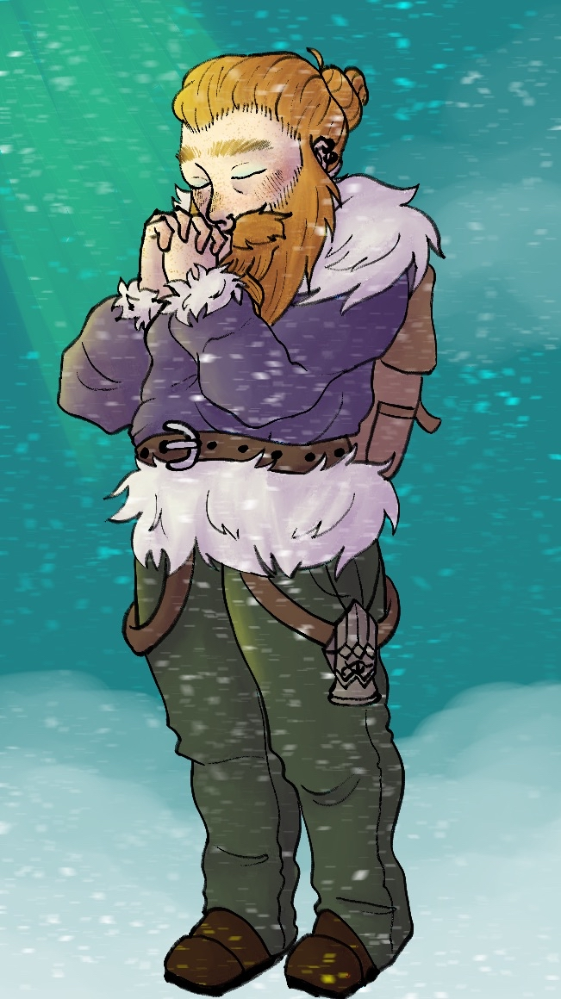
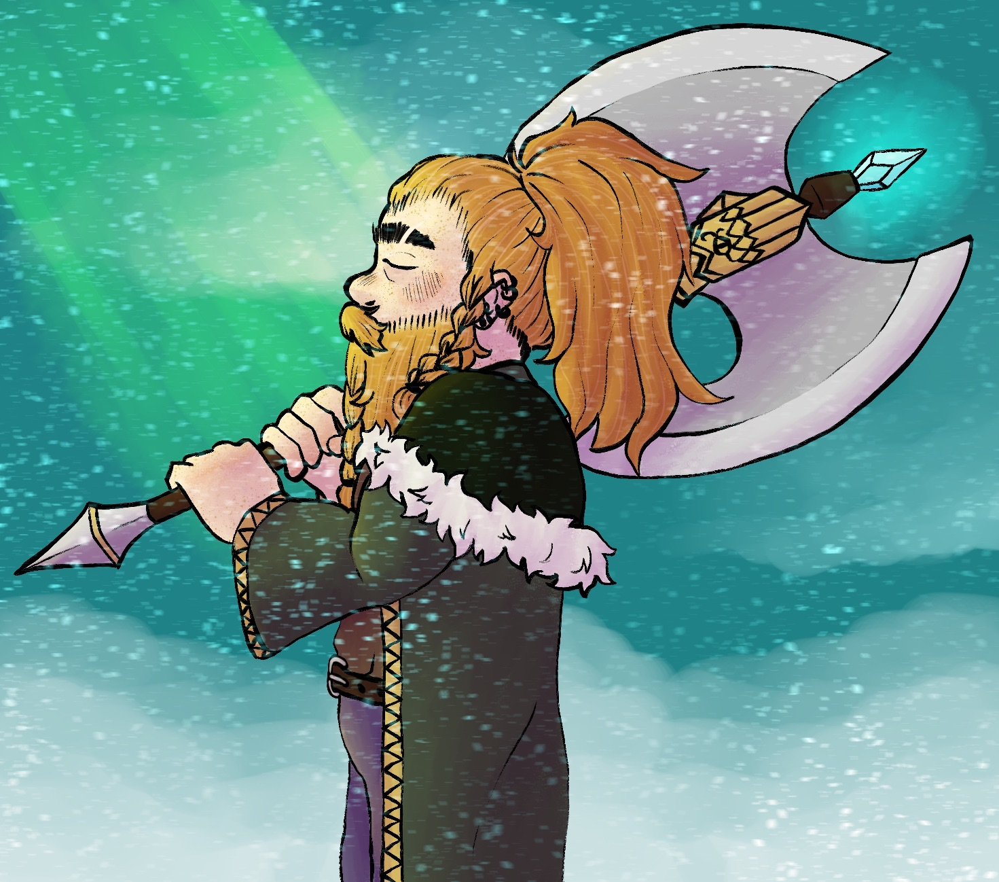
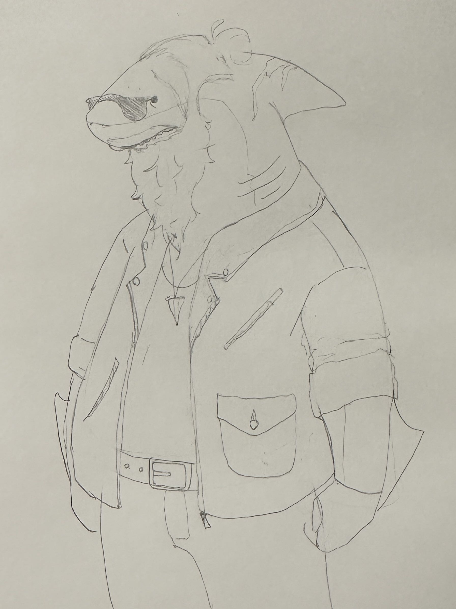
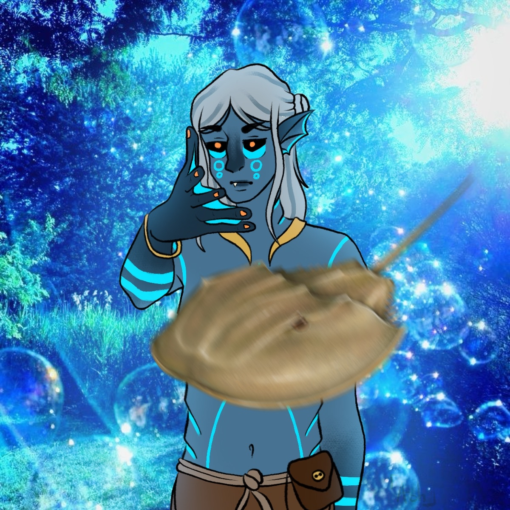
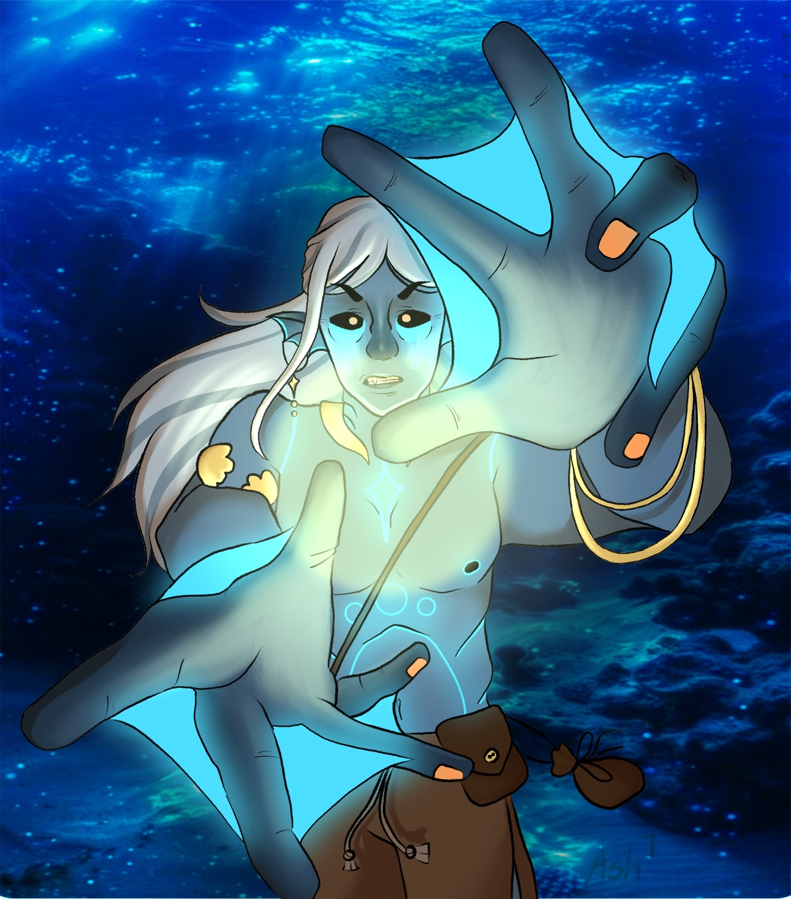
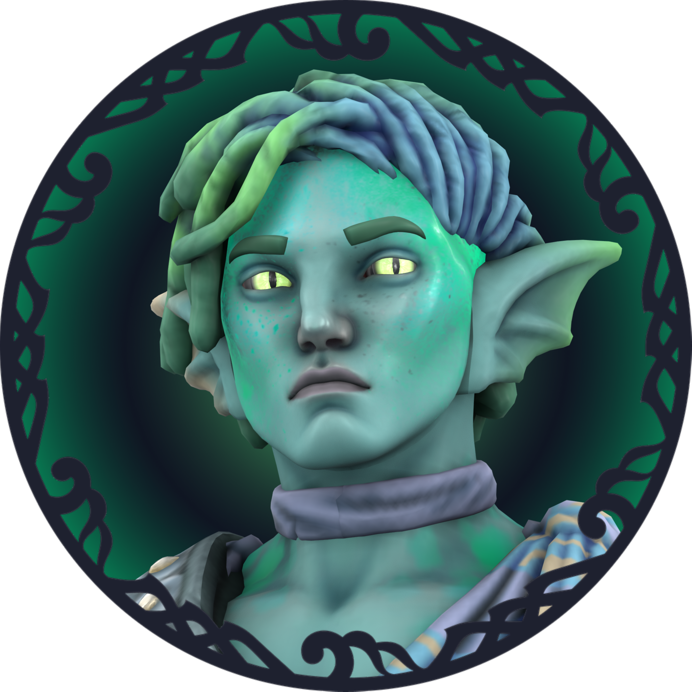
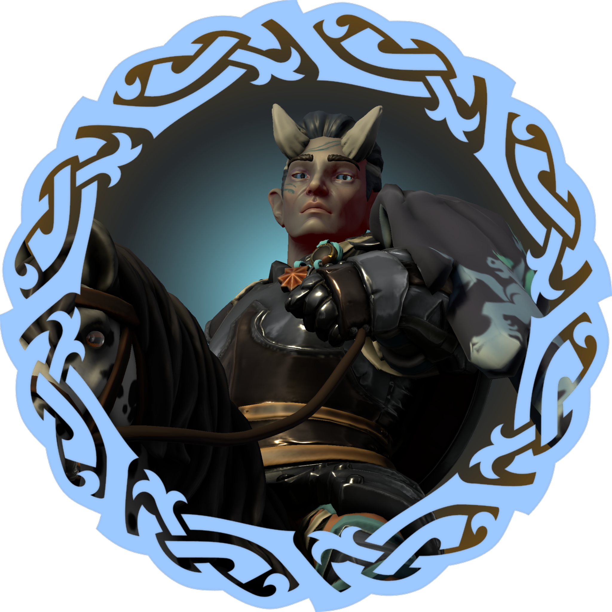

While the system is being created by me and playtested by my fantastic and loyal lab rats below, all sessions so far have been played in Dungeons and Dragons fith edition.
People
- Dashiell Geiser as: GM
- Ashton Maloney as: Gorm Helm and Nibin Mahi
- Nat Hall as: Bellis Perrenis and Innenza Blang
- Nicholas Grundman as: Storm Helm and Churchill Mcdowry
- Logan "What is a name but what people call you" DeSaw as: Morgarath Lanpore and Anadine
- Rae Robinson as: Ara Morro and Callahan Humphrey
My players have made wonderful art for their characters, here are some of their creations displayed with their permission :)







